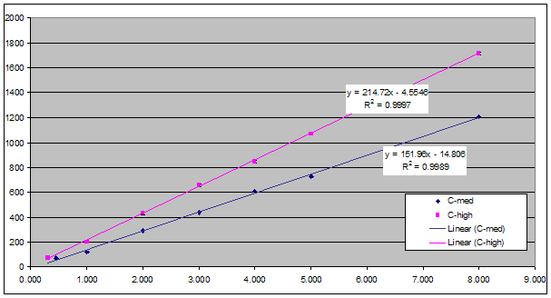

|
|
| The Traffic Simulator
Configuration Tool (TSCT) is a powerful tool for adjusting the
configuration of the NAM Unified Traffic Simulator (known as the NAM
Simulator for short) and its associated data views to your liking. Only
those aspects of the simulator that are completely safe for the player
to modify are included in the TSCT; if you follow the instructions
here, you don't have to worry about unexpected side effects, no matter
what settings you use. Nevertheless, changing the settings available in
the TSCT can have a big effect on your game, ranging from changing your
city's income or expenses to changing the congestion levels of traffic,
which in turn can have many secondary effects. For a more
complete understanding of many of these fields, and of the traffic
simulator in general, please see A Guide to the Operation of the Traffic
Simulator. Since the NAM Simulator is essentially a generalized form of Simulator Z, the TSCT can be used to modify the configuration of Simulator Z, if that is what you are currently running. The result of such a modification is a version of the NAM Simulator that is completely compatible with Simulator Z. The TSCT can be used to update your current copy of the NAM Simulator to the latest version, change your settings in the NAM Simulator and its associated data views, or switch your traffic simulator to the NAM Simulator from one of the earlier traffic simulators. Although the NAM Simulator is generally used with the rest of the NAM, it does not require the NAM, so the TSCT can also be used to install the NAM Simulator and optionally its data views in a game that is not running the NAM. This User's Guide will describe the procedure of selecting a traffic simulator to modify, how all the fields in the TSCT work on the selected simulator, what effects these various fields have, and the various ways of saving your changes. It will start with the Base Network Capacity and the Network Capacity Multiplier, which are generally the most heavily used fields in the TSCT. After that, it will describe the fields in the order in which they appear in the main TSCT window. |
|
|
|
|
When
you first start the TSCT, it tries to find your NAM folder. If it
succeeds, it looks for an existing copy of the NAM Simulator; if it it
finds one, it loads it the and displays its settings in the main
window. If it doesn't find an existing copy of the NAM Simulator in
your NAM folder, it displays a message to this effect and loads
settings for a standard version of the NAM Simulator. |
|
|
|
|
Please note that although any
changes made to your traffic simulator take effect immediately, the
time it takes for these changes to show up in your traffic patterns
will vary greatly, depending on the change. Some
changes will show up immediately in your traffic patterns, some changes
will show up the next time the traffic simulator runs (about once every
four months), and some changes may take up to eight years to fully
manifest. For longer-term changes, you can tell when the
change is complete by looking at the Traffic Volume Graph.
When it shows basically stable traffic patterns for at
least two years, then you can be confident that the change has
completely manifested in your city. Base Network Capacity If you want to change to one
of the other standard capacity versions of the NAM Simulator, use the
drop-down box labeled “Base Network Capacity” to
choose the capacity you want. (This box is located near the left, about
two-thirds of the way down the window in blue
letters.) Capacities range from "Classic" (the lowest) to
"Ultra" (the highest). Generally, you would use "Classic" for rural
areas and towns, while "Ultra" is generally recommended only for cities
of many millions of Sims. Network Capacity Multiplier If you want to use a capacity
level that is in between the five main levels, or outside the range of
these levels, you can use the Network Capacity Multiplier.
This field multiplies the base capacity by the number in the spin box,
which may range from 0.1 to 2.0. If you change the number in the spin
box, you will immediately see the network capacity numbers in the row
of boxes above this field change accordingly. For proper operation of
the traffic simulator, the proportion of the various network capacities
at a given base network capacity is fixed. However, this proportion
varies slightly among the various base capacities, with rails having
proportionately higher capacities as the base network capacity
increases. You can use this information along with the Network
Capacity Multiplier to create capacity spreads to your
liking. |
|
|
|
|
Mass Transit Usage This drop-down box controls
the preference of Sims for mass transit over cars. There are six
selections here, including five fixed options that range from Low to
Very High. The "Medium" selection corresponds to what is typically
found in large American cities with fairly comprehensive mass transit
systems, while the "High" selection corresponds to many large European
cities with even more comprehensive mass transit systems. The actual
preference of each type of Sim (R$, R$$, and R$$$) for mass transit in
each of these five levels is reflected in the grayed-out array of nine
boxes to the right of the drop-down box, which changes whenever the
selection in the drop-down box is changed. Highway Bus Lanes This field increases the speed of buses on highways slightly, with the corresponding result that the number of Sims taking buses that travel on highways will also increase. This is similar to what happens with real-world highway bus lanes. The automata aren't changed, however, in that cars will still be present in all lanes, although the number of buses should be somewhat greater. From a visual point of view, you can consider that the bus lanes also allow high occupancy traffic of other types as well. Park & Ride This field changes the way
the game works so that cars cannot take the Sims directly to their
workplace. Instead, they are useful only for taking them to parking
facilities where they can either walk the rest of the way to work, or
(most usefully) parking facilities where they can take mass transit to
work. In the second case, you need to build such parking facilities
near mass transit stations; putting them at the edge of residential
zones can be especially useful. If this option is checked and
sufficient parking facilities are not built, the Sims will end up
driving all the way to work and then discover that they have no place
to leave their car. As a result, they don't make it to work, they get
fired, and they leave town, leaving behind an abandoned residence. Buses contribute to traffic In the original Maxis traffic simulator, buses did not contribute to traffic congestion; the pathfinder was not tuned tightly enough to make this workable even if it had been desired. Experiments showed that turning this field on in the original simulator would have simply increased the existing traffic congestion without having any significant benefit. However, in the NAM traffic simulator, the pathfinder has been tuned so that it is much more intelligent than in the original Maxis traffic simulator, and it is now possible to allow buses to contribute to traffic (just like every other vehicle travel type) without creating any problems. In fact, the traffic simulation as a whole runs much better this way. The reason for this is that in the original Maxis traffic simulator, buses became the travel type of last resort; if congestion on the roads or most rails became too great, the traffic simulator could always cram more Sims into buses and thereby reduce congestion arbitrarily, since all the road networks had an infinite capacity for buses. This was highly unrealistic, and had the Sims at times abandoning faster forms of transport for buses simply to avoid congestion. The current NAM traffic simulator avoids this problem by letting buses contribute to traffic. However, buses, like all vehicles in SC4, are really single-passenger vehicles, and so some of their usefulness is lost in that they are now no more efficient than cars at transporting Sims. However, they are still very useful for those Sims who prefer to use mass transit, and even more importantly, they are extremely efficient at ferrying Sims to high speed rapid transit (i.e., the various rail networks) where no parking exists. So although each setting of this property has certain drawbacks, the traffic simulator works better and provides a more accurate traffic simulation when this field is checked, which is its original state.. However, some people like the way the original Maxis traffic simulator worked, or they just like to have increased use of buses. For these people, this field can be unchecked, and the behavior of the original Maxis traffic simulator will be restored with regard to buses. If this is done, though, the traffic simulation as a whole becomes slightly degraded as a result. The amount of degradation is fairly minimal, though, so as long as it is understood that this happens, unchecking this field should not cause any major problems. |
|
|
|
|
Monthly Fares per Sim per Tile These boxes specify how many
simoleons your city collects each time the named travel type passes
over a single tile. These are called "fares" because by default, only
mass transit travel types have these set to nonzero values. By raising
or lowering these numbers, you can raise or lower the fares for any
travel type. The Sims don't actually pay the fares; the city just
collects them. This is a limitation of the simulation. Also, raising or
lowering the fares has no effect on the Sims' travel habits. Instead,
it can either be used as a device for generating more revenue for your
city's treasury, making the game easier, or for subsidizing the Sims'
mass transit use, which generates less revenue for the city and makes
the game harder. Monthly Costs per Network Tile These boxes specify how much the city's treasury is charged each month for a single tile of each network type. Unlike Monthly Fares per Sim per Tile, changes to these costs take effect the next time you start the game. Normally, these costs are considered maintenance costs. But they can also be considered to incorporate construction costs as well, especially since construction costs aren't directly available to the traffic simulator. In reality, governments don't pay cash for large transportation projects; why should your city? Instead, governments will often issue bonds. So you can consider that the monthly costs also cover the cost of interest-only bonds that your city has issued to pay for the network. Since these bonds are interest-only, payments on them continue forever (or at least until the network is demolished). As with Monthly Fares per Sim per Tile, changes to this field provide a simple way to make the game either easier or more difficult. You may notice that the monthly cost for the RHW network tiles is set to zero and that this setting cannot be changed. The reason for this is that the RHW is based on an unused network that was incompletely implemented by Maxis in SC4. One of the things that was not implemented in this network was the monthly cost per network tile, and although this value can be set internally in the traffic simulator, the game always acts as if it is zero. Customers/Traffic Noise Coefficient This field controls the effect of road noise both on business customers and on residences. Road noise is generated by the pedestrian, car, bus, and truck travel types traveling on any of the road networks except highways. Road noise is good for businesses; the number of customers that a particular business receives is directly proportional to the inverse of this coefficient; what this implies is that a given percentage increase or decrease in this number will have the same effect on noise levels throughout the coefficent's range. Specifically, the number of customers that a business receives is given by the formula Customers = coefficient*(traffic volume) where "traffic volume" is the maximum volume observed for the morning commute in nearby tiles. The threshold for the medium customer level is 152, and the level for the high customer level is 215; the maximum number of customers is capped at 255. (For more specifics, please see A Guide to the Operation of the Traffic Simulator.) The following graph shows the threshold for medium and high customer levels plotted against the inverse of the coefficient. (The graph is supplied courtesy of Trias.) 
Intersection Effect Multiplier SC4
simulates the speed reductions caused by stoplights, stop signs, and
turning traffic by reducing network capacity at intersections and the
two squares approaching them. This means that at intersections with
heavy traffic, congestion will occur and slow down the traffic. Due to
the way the simulator works, it can delay the traffic for no more than
about six seconds, which is shorter than any standard stoplight cycle.
However, even to do this much, network capacity has to be reduced to
the point where the two squares approaching an intersection show up as
red in the Traffic Congestion Data View. By default, the NAM Simulator
has this effect set so that the maximum delay occurs only at very busy
intersections. Wherever you see all green surrounding an intersection
in the Traffic Congestion Data View, traffic is not slowing down at
all; there is effectively no traffic control at that intersection. Commute Time Graph Scaling Factor Please note:
The Commute Time Graph was not implemented properly in SC4, and as a
result, it is impossible to configure it to give consistently correct
readings. Nevertheless, many people like to use this
graph, and on occasion, it can provide useful information. Commute Trip Max Time This field specifies the maximum time in minutes that Sims are allowed to take to reach their jobs in the morning commute. (The evening commute never has any time limit.) This is the only field of its type that is grayed out in the Traffic Simulator Configuration Tool, and the reason for this is that setting the value in this field too low can have extreme negative consequences for your game. The field can be enabled by checking the box next to it. The default value of 600, which translates into ten hours, may seem quite excessive, and in fact may seem to imply an impossibly long work day for the Sims. However, time does not flow quite as you would expect in this game when there is traffic to other cities; this effect was discussed in the previous section, Commute Time Graph Scaling Factor. Before the current value for perfect pathfinding was discovered, a value this high was required for effective intercity commuting. Although this is no longer the case, higher values, at least up to 600, do seem to provide a slightly positive effect on a city's health, without providing any negative effects. Raising this value beyond 600 does not seem to have any effect at all. What are the effects of lowering this value? Once it becomes substantially lower than 600, there is often a small decline in the general wealth levels of the city. This decline tends to be rather small, though, and is often noticeable only by examining the Pop & Jobs graph over many years. Reducing this value down into the double digits starts to have more of an effect. Normally, all commutes within a given city are Short, and all commutes to neighboring cities are Long. Short commutes give a slight increase to the desirability of a Sim's residence, while Long commutes result in a slight decrease in desirability. Medium commutes have no effect on desirability. As the value of Commute Trip Max Time continues to drop, some of the longest commutes within the city will become Medium, making their originating residences less desirable compared to the residences of Sims who have Short commutes. As Commute Trip Max Time drops even further, some Long commutes will start appearing in the city, and the residences from which those commutes originate will have even lower desirability. Jobs with a Long commute in the current city have lost their built-in advantage over jobs in a neighboring city, so that paradoxically, there is a certain lower range of Commute Trip Max Time where it becomes more attractive to many Sims to look for jobs in adjacent cities than in their own. This may also aggravate any eternal commuter loops that may be present in the region. Once Commute Trip Max Time starts falling into the single digits (and sometimes slightly before), the probability that Sims will find jobs for which they are qualified starts to decline, because there is just no longer time to reach them. When this happens, the dreaded No-Job Zot appears over the Sims' homes, and if they can't find a job within about six months, the Sims leave town, and their residence is abandoned due to commute time. At these levels of Commute Trip Max Time, traffic routes and congestion levels become much more important, because every second counts in determining whether Sims will keep their jobs. This whole situation can become quite challenging, but it is because many people like this type of challenge that this option has been included in the Traffic Simulator Configuration Tool. For reference, the original game had a Commute Trip Max Time of six minutes. In the Traffic Simulator Configuration Tool, this field can be set as low as one minute. Vehicle Air Pollution This field specifies the
fraction of normal air pollution that vehicles emit when the Clean Air
Act is enabled. Normally, the unmodified Clean Air Act doesn't affect
vehicle air pollution at all; even stranger, neither does the
Automobile Emission Reduction Act. Instead, both of these ordinances
affect all types of air pollution except vehicle air pollution. Each of
these ordinances reduces all other air pollution by 10%; the effect of
these two ordinances is additive. |
|
|
|
|
Use new Subway View Starting with the June 2009 NAM, the Subway View (where you build subways) automatically shows the traffic volume for the subways, using the same colors as the Traffic Volume Data View. It also shows essentially all subway stations. This can be helpful in deciding where to build new subway lines. However, some people may not like this feature. Unchecking the box in this field turns it off. Use new Subway Building View Starting with the June 2009 NAM, the Subway Building View (where you build subway stations) has been drastically changed. The biggest change is that in the new Subway Building View, buildings are not displayed, making it easier to place subway stations in high-density sections of your cities. To return the the original Maxis Subway Building View, uncheck the box in this field. Display Subway / El Rail / GLR Volume This field is available only when Use new Subway Building View is checked; otherwise, it is grayed out. When this option is checked, the subway, el rail, and GLR volume is shown for those networks, just as it is in the Traffic Volume Data View. Use new Zones View Starting with the June 2009 NAM, the Zones View has been modified to display much more than just the zones. It now displays what the new Subway Building View displays, except without the rail volume. To use the original Maxis Zones view, uncheck the box in this field. Show Subway Lines This field modifies the new Zones View; when the Use new Zones View field is unchecked, this field is grayed out. Normally, subway lines are part of what is shown in the new Zones View. When the box in this field is unchecked, they are no longer shown. Show Props This field also modifies the new Zones View; when the Use new Zones View field is unchecked, this field is grayed out. Normally, props are part of what is shown in the new Zones View. When the box in this field is unchecked, they are no longer shown. |
|
|
|
| When you are
finished making modifications to your simulator, click the "Save"
button. The modified simulator will be saved in the same folder from
which the original simulator was loaded. If any of your data views were
changed, they will be automatically saved as well. If you changed the Network
Capacity Multiplier from its standard value of 1.0, this
will automatically generate new Traffic Volume Data Views, and they
will be included in the save. If there is a standard traffic simulator already in this folder, you will be asked if this is your active traffic simulator folder (usually your NAM folder). If you say "Yes," then any existing traffic simulator will be deleted; if there is a custom simulator (i.e., one created by this program), it will be renamed to have a ".sav" extension, possibly followed by a number. The same procedure is followed if your Traffic Volume Data View file has been changed. If you didn't specify a NAM folder or an initial simulator to modify at the beginning, pressing the "Save" button will bring up a folder dialog box that will allow you to select a folder in which to save your changed files. You can also use the "Save As" command in the "File" menu to force the program to allow you to choose a folder to save your changed files. If you make changes to your simulator and then decide you don't like them, you can click the "Reset" button. This will set all fields in the program to what they were when your simulator was loaded or created, or when it was last saved, whichever is more recent. Backups If backups are currently turned on, a backup is made of any changed files. (See the section named Backups in the "Configuration" section below for details on managing this option.) Only those files that have been modified from the default are changed, since standard files can easily be created by using the TSCT and this Guide. Backups are stored in the backup subfolder of the main TSCT installation directory. The name most recent backup consists of the main file name followed by a .sav extension instead of the normal .dat extension. If more than one backup has been specified (the default is five), the first saved file will be renamed to have a .sav1 extension when the next backup is saved. As further backups are made, the most recent one will be renamed to have a .sav extension followed by the next available number. The total number of backups is pruned as necessary so that it doesn't exceed the specified number. You can easily tell if backups are turned on or not by looking at the space at the bottom of the screen directly to the left of the Save button. If backups are turned on, the phrase "Backups On" will be displayed. If backups are turned off, the phrase "Backups Off" will be displayed. |
|
|
|
|
The TSCT can be
used to create a traffic simulator that closely emulates any of the
simulators from recent NAM releases - specifically, simulators A
through E and their variations. (As the TSCT uses the core of Simulator
Z as a base, no emulation of that simulator is necessary.) This section
describes what is necessary to create such emulations. If you try
certain settings for an emulation and they aren't quite what you want,
simply change them; no lasting harm will come to your city from using
settings that are somewhat different from what you used before. For all of the older simulators, Buses contribute to traffic should be unchecked, Vehicle Air Pollution should be set to 0.90, and Commute Time Graph Scaling Factor should be set to 1.000. For all of the older simulators except Simulator B, the Customers/Traffic Noise Coefficient should be set to 0.128. For Simulator B, this coefficient should be set to 0.096. For Simulators A and B, the
base network capacity
of "Low", "Medium", and "High" roughly corresponds to these simulators'
"Hard", "Medium", and "Easy" levels. However, congestion at a given
capacity level in the NAM Simulator is usually much less than
congestion at the corresponding capacity level of Simulators A or B.
Therefore, you may wish to use a lower capacity level for these
simulators, or make a finer adjustment using the Network
Capacity Multiplier. What is necessary here depends on
lot on your cities, and specifically how much rapid transit you use.
The more rapid transit you use, the less network capacity you will
need. Conversely, a city with little or no rapid transit will tend to
require capacity levels very similar to the ones used in Simulators A
and B to provide similar congestion levels. For all versions of Simulators C, D, and E, the value of Commute Trip Max Time should be set to 6. For Simulator A, this value should be set to 17, and for Simulator B, it should be set to 24. |
|
|
|
|
This program has a number of configuration options that can be found in the Options selection under the Tools menu. The Options dialog allows you to set a number of configuration options within the program. They include the following: Language Here you can specify the language of the user interface and the User's Guide. Currently, English and German are supported. Backups This setting specifies the number of backup versions of your traffic simulator and data view files that the TSCT will keep. A value of zero means that no backups are made. Backups are described in more detailed in the section named Backups under "Saving Changes," above. GUI Style (Skin) This setting specifies the style of the program's Graphical User Interface. Debug Mode (Log to file) When set, this option causes a debugging log file to be created in the temp subfolder of the TSCT installation folder. Welcome Dialog When set, this option causes the initial Welcome screen to be displayed the next time the program is run. It is only displayed once, unless this option is checked again later. Traffic Simulator Folder This is a read-only field that specifies what folder the TSCT is currently using for reading and writing traffic simulators and data views. |